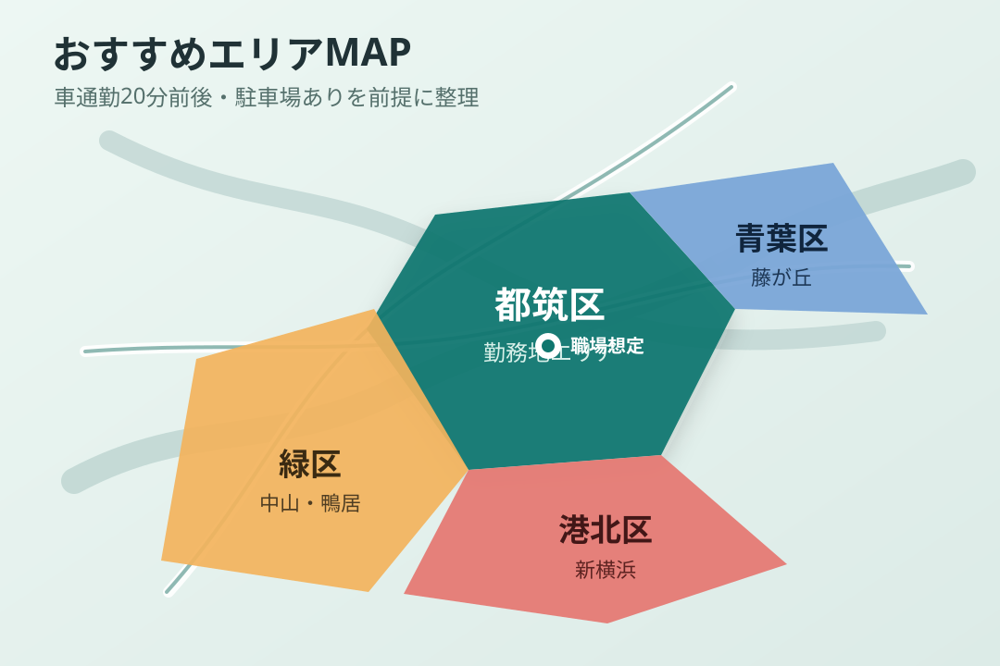

横浜市緑区
中山・鴨居・十日市場方面。都筑区へ車で出やすく、駐車場込みの総額を抑えやすい第一候補です。
物件GO 提案ページ
車通勤20分前後、駐車場あり、家賃8万円前後を軸に整理しています。

中山・鴨居・十日市場方面。都筑区へ車で出やすく、駐車場込みの総額を抑えやすい第一候補です。
川和町・北山田・仲町台方面。通勤距離は短くしやすい一方、駅近や築浅は総額が上がりやすいです。
新横浜・篠原町方面。新横浜寄りは生活利便性があり、都筑区方面へ車移動しやすい候補です。
藤が丘・市が尾方面。築年数を許容できれば、広さと家賃のバランスが良い候補が出ます。
PDF資料は、加工済みの共有用PDFだけを下の資料欄に掲載します。
緑区 A候補
賃料6.5万円 + 共益費2,000円
PDFなし
緑区 B候補
賃料7.8万円 + 管理費3,000円
PDFなし
青葉区 A候補
賃料5.85万円 + 管理費2,500円